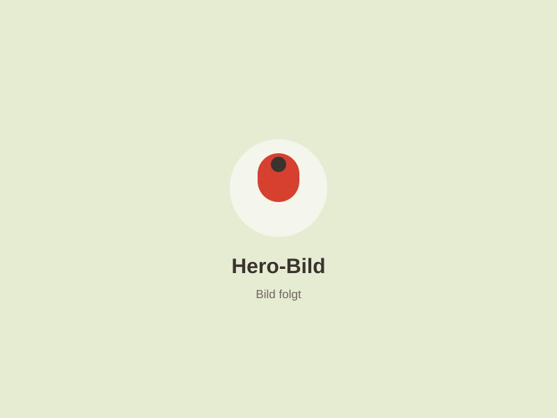
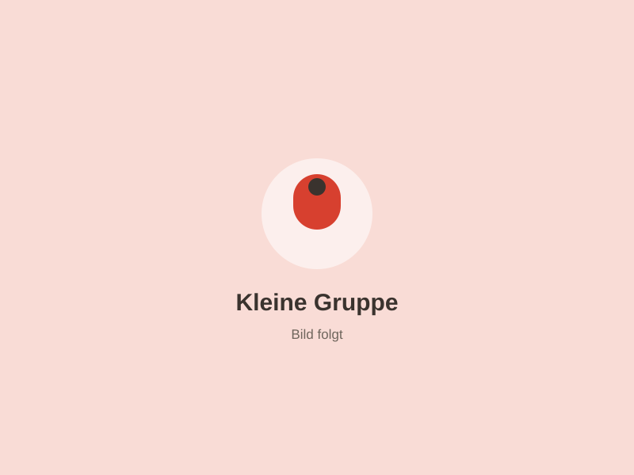
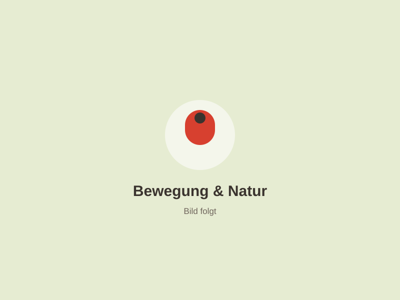
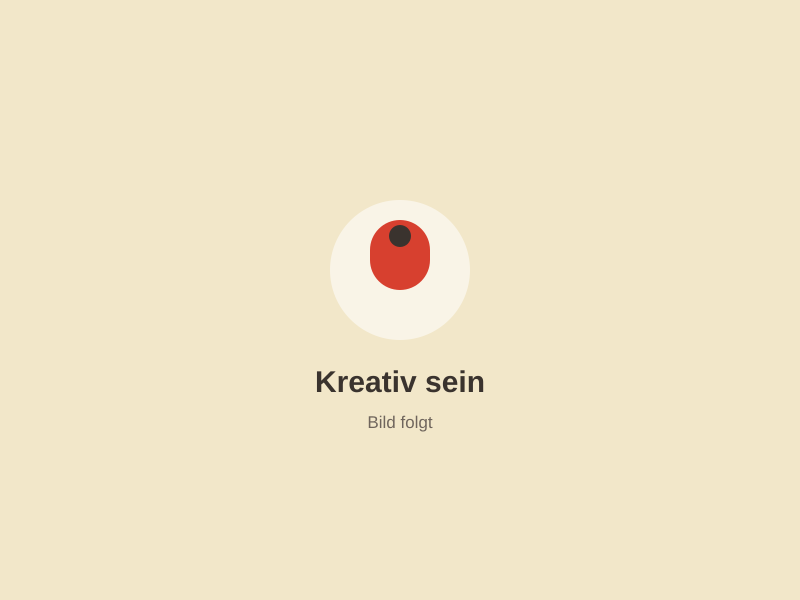
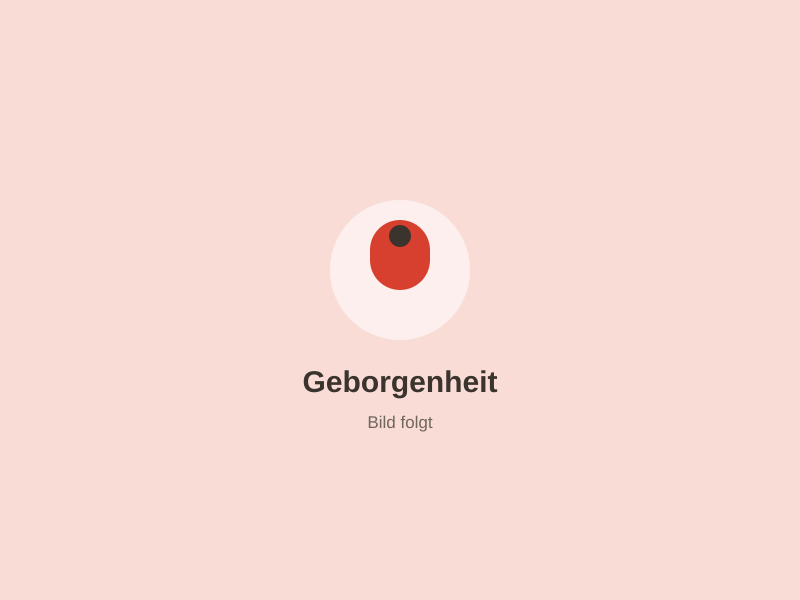
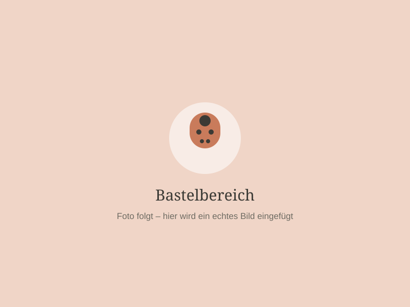
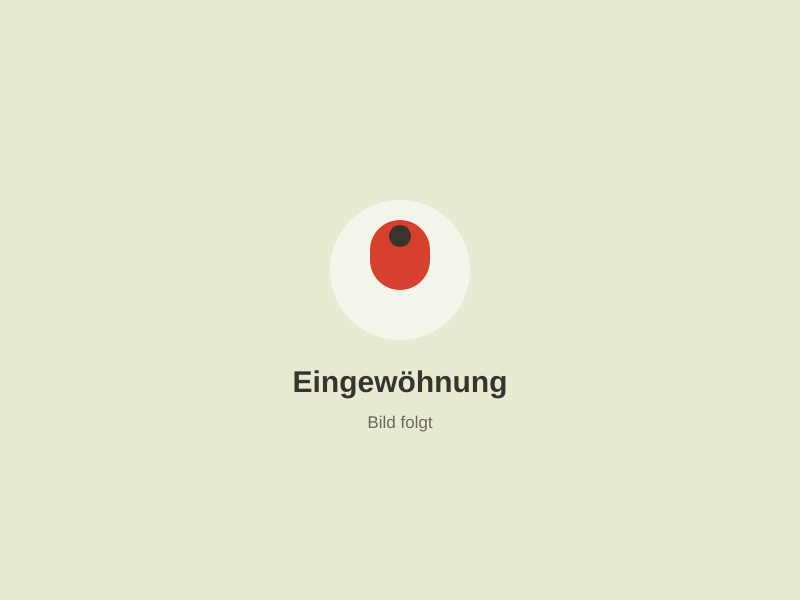

Hier dürfen Kinder Kinder sein.
Die Glückskäfer Bande ist eine kleine Kindertagespflege in Ostfildern-Kemnat – ein zweites Zuhause auf Zeit, in dem dein Kind geborgen aufwächst, spielt, entdeckt und in seinem eigenen Tempo groß wird.
Vier Dinge, die dein Kind bei uns jeden Tag erlebt

Kleine Gruppe
Viel Nähe, viel Zeit, viel Aufmerksamkeit für jedes einzelne Kind.
Mehr erfahren →
Bewegung & Natur
Laufen, klettern, balancieren – drinnen, im Garten und in der Natur.
Mehr erfahren →
Kreativ sein
Malen, basteln, Musik, Geschichten – mit allen Sinnen entdecken.
Mehr erfahren →
Geborgenheit
Kuscheln, trösten, ausruhen – Sicherheit, die wachsen lässt.
Mehr erfahren →
Hallo, ich bin Yasemin.
Ich bin qualifizierte Kindertagespflegeperson und selbst Mutter von drei Kindern. Ich weiß, wie wichtig es Eltern ist, ihr Kind in liebevollen und vertrauensvollen Händen zu wissen – und genau diese Sicherheit möchte ich euch geben.
Für mich ist Kindertagespflege mehr als Betreuung: Jedes Kind ist eine eigene Persönlichkeit, mit eigenem Tempo und eigenen Bedürfnissen.
Mehr über michEin kleines zweites Zuhause auf Zeit
Kindgerecht, gemütlich und mit viel Liebe eingerichtet – mit Bereichen zum Kuscheln, Lesen, Basteln, Spielen, Bewegen und einem Garten zum Toben.



In drei Schritten zum Betreuungsplatz
Anfrage senden
Schreib mir kurz, ab wann und an welchen Tagen du Betreuung brauchst. Ich melde mich zeitnah zurück.
Kennenlernen
Wir treffen uns bei mir zu Hause. Du siehst die Räume, wir sprechen über dein Kind, eure Wünsche und alle Fragen.
Eingewöhnung
Schritt für Schritt, im Tempo deines Kindes – bis aus dem neuen Ort ein vertrauter Ort geworden ist.

Vertrauen braucht Zeit – und die bekommt dein Kind.
Der Start in die Kindertagespflege ist für jedes Kind anders. Deshalb gestalten wir die Eingewöhnung individuell und Schritt für Schritt. Auch ihr Eltern werdet in dieser Zeit eng begleitet.
Wie die Eingewöhnung abläuftDas steht bei uns im Mittelpunkt
Was Eltern uns oft fragen
Ab welchem Alter betreust du Kinder?
In der Regel ab [Alter, z. B. 12 Monaten] bis zum Kindergarteneintritt. Sprich mich gerne an – wir schauen gemeinsam, ob es passt.
Was kostet die Betreuung?
Kindertagespflege wird in Baden-Württemberg öffentlich gefördert. Die Eltern zahlen einen einkommensabhängigen Kostenbeitrag an das Jugendamt des Landkreises Esslingen, ähnlich wie bei einer Krippe. Ich erkläre dir gerne, wie der Antrag läuft.
Wie läuft die Eingewöhnung ab?
Individuell und in kleinen Schritten: erst gemeinsam mit Mama oder Papa, dann kurze Trennungen, die langsam länger werden – immer im Tempo deines Kindes.
Was ist, wenn du krank bist oder Urlaub hast?
Für Ausfallzeiten gibt es im Landkreis Esslingen ein Vertretungskonzept für die Kindertagespflege. Urlaubszeiten plane ich frühzeitig und spreche sie mit euch ab.
Gibt es Essen bei dir?
Ja, wir essen gemeinsam am Tisch. Frühstück, Mittagessen und Snacks werden frisch zubereitet – Unverträglichkeiten und Wünsche besprechen wir vorab.
„Kinder sind wie kleine Sonnen – sie bringen Licht in unser Leben.“☀️ Glückskäfer Bande
Interesse an einem Betreuungsplatz?
Du möchtest dein Kind in einer kleinen, liebevollen und familiären Kindertagespflege betreuen lassen? Dann melde dich gerne bei mir. Ich freue mich darauf, dich und dein Kind kennenzulernen.